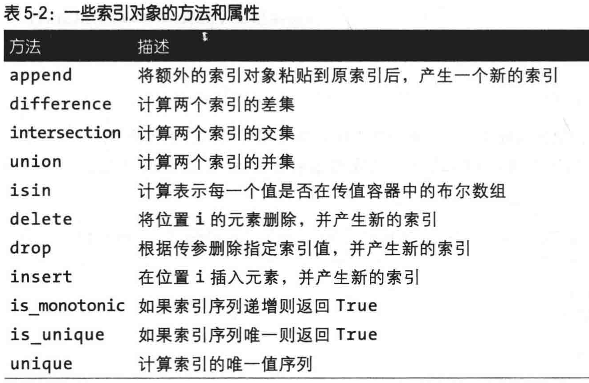

panda 对象、索引都有 name 属性
series，可以认为它是一个长度固定且有序的字典
索引index，可以指定字符串数组为索引，根据此数组顺序进行排序，索引对象是不可变的，无法修改索引对象。
index[1]='d' # TypeError
值 value
dataframe，表示矩阵的数据表，行列索引都用，列索引一般由你指定，行索引可以自动生成，可以嵌套 dataframe
当你将列表或者数组赋值给列时，长度必须与 DataFrame 匹配
Frame["colunm"]可以获取列，frame.colunm 也可以，但是必须是有效的 Python 值，不存在键时会报错
Frame["colunm"]=arrange(6)可以创建新的列，但是Frame.colunm=arrange(6)不可以
索引像数组一样，但是方法像集合

df2=df.reindex(index=['a','b','c'],columns=['f','d','w'])
method=’ffile’，向前填充，’bfill’向后填充
fill_value=0 这是填充值
删除 指定行、列，并返回新的对象，如果要修改原对象，可以设置 inplace=True
data.drop(["row1"])
data.drop(["col1"],axis=1)
data.drop(["col1"],axis=1,inplace=True)
数值切片时与 Python 一致不含之后一列，但是字符串切片时，是包含最后的。
loc 轴标签，iloc 整数标签
data.loc[[1,2],[3,0,1]]
loc[:1] # 包含 1
iloc[:1] # 不包含1 ，有点坑
sort_index(axis=)，对索引进行排序
sort_values(by=['a','b'])，对值进行排序
na ： not available
dropna 过滤掉 na (how='all', axis=1，thresh=2)全部是 na 时才是删除，并指定为列，thresh 表示只删除第2列或者行
fillna 替换 na
isnull 判断是否为 na
notnull
s = pd.Series([1, 3, 5, np.nan, 6, 8])
传递数组
dates = pd.date_range('20130101', periods=6) # 创建时间列表，作为下面的索引
"""
DatetimeIndex(['2013-01-01', '2013-01-02', '2013-01-03', '2013-01-04','2013-01-05', '2013-01-06'], dtype='datetime64[ns]', freq='D')
"""
df = pd.DataFrame(np.random.randn(6, 4), index=dates, columns=list('ABCD')) # index是行索引，columns 是列索引
"""
A B C D
2013-01-01 0.469112 -0.282863 -1.509059 -1.135632
2013-01-02 1.212112 -0.173215 0.119209 -1.044236
2013-01-03 -0.861849 -2.104569 -0.494929 1.071804
2013-01-04 0.721555 -0.706771 -1.039575 0.271860
2013-01-05 -0.424972 0.567020 0.276232 -1.087401
2013-01-06 -0.673690 0.113648 -1.478427 0.524988
"""
传递字典
df2 = pd.DataFrame({'A': 1.,
'B': pd.Timestamp('20130102'),
'C': pd.Series(1, index=list(range(4)), dtype='float32'),
'D': np.array([3] * 4, dtype='int32'),
'E': pd.Categorical(["test", "train", "test", "train"]),
'F': 'foo'})
"""
A B C D E F
0 1.0 2013-01-02 1.0 3 test foo
1 1.0 2013-01-02 1.0 3 train foo
2 1.0 2013-01-02 1.0 3 test foo
3 1.0 2013-01-02 1.0 3 train foo
"""
df.head()
df.tail(3)
df.index # 行索引
df.columns # 列索引
df.to_numpy()
Out[17]:
array([[ 0.4691, -0.2829, -1.5091, -1.1356],
[ 1.2121, -0.1732, 0.1192, -1.0442],
[-0.8618, -2.1046, -0.4949, 1.0718],
[ 0.7216, -0.7068, -1.0396, 0.2719],
[-0.425 , 0.567 , 0.2762, -1.0874],
[-0.6737, 0.1136, -1.4784, 0.525 ]])
使用
DataFrame.to_numpy()](https://pandas.pydata.org/pandas-docs/stable/reference/api/pandas.DataFrame.to_numpy.html#pandas.DataFrame.to_numpy) 有时代价会非常大，特别是当每列数据类型不同的时候，这是pandas 与 NumPy本质的不同造成的: 整个NumPy数组只有一种数据类型 ,而 pandas 的每一列都可以是不同的数据类型. 当你使用DataFrame.to_numpy(), pandas 要选择一种能覆盖 DataFrame 中所有数据的 NumPy dtype ，最终往往是object, 这就需要将每个值都转为 Python object类型。
df.describe()
”“”
count 6.000000 6.000000 6.000000 6.000000
mean 0.073711 -0.431125 -0.687758 -0.233103
std 0.843157 0.922818 0.779887 0.973118
min -0.861849 -2.104569 -1.509059 -1.135632
25% -0.611510 -0.600794 -1.368714 -1.076610
50% 0.022070 -0.228039 -0.767252 -0.386188
75% 0.658444 0.041933 -0.034326 0.461706
max 1.212112 0.567020 0.276232 1.071804
“”“
df.T
默认是对行索引排序，axis=1 时对列索引排序
df.sort_index(axis=1, ascending=False) # 列索引逆序
"""
D C B A
2013-01-01 -1.135632 -1.509059 -0.282863 0.469112
2013-01-02 -1.044236 0.119209 -0.173215 1.212112
2013-01-03 1.071804 -0.494929 -2.104569 -0.861849
2013-01-04 0.271860 -1.039575 -0.706771 0.721555
2013-01-05 -1.087401 0.276232 0.567020 -0.424972
2013-01-06 0.524988 -1.478427 0.113648 -0.673690
"""
df.sort_values(by='B')
"""
A B C D
2013-01-03 -0.861849 -2.104569 -0.494929 1.071804
2013-01-04 0.721555 -0.706771 -1.039575 0.271860
2013-01-01 0.469112 -0.282863 -1.509059 -1.135632
2013-01-02 1.212112 -0.173215 0.119209 -1.044236
2013-01-06 -0.673690 0.113648 -1.478427 0.524988
2013-01-05 -0.424972 0.567020 0.276232 -1.087401
"""
列选择
df['A']等价于 df.A
行切片
df[0:3]